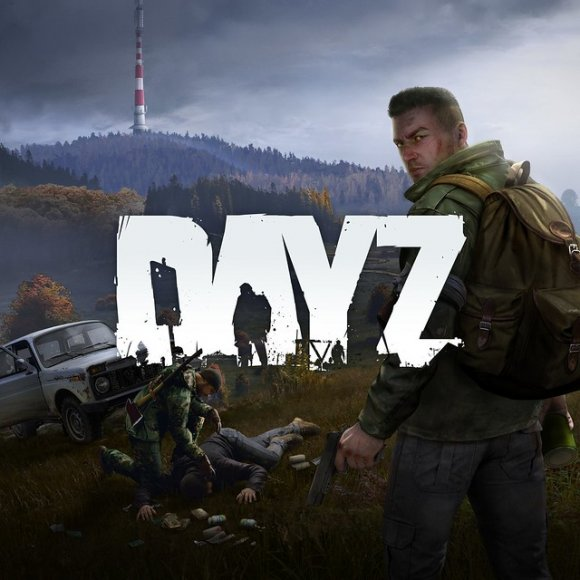

Es un videojuego de terror y de mundo abierto, desarrollado por Bohemia Interactive y la versión independiente
del premiado mod homónimo, creado por Dean Hall. El juego está ambientado en el estado postsoviético ficticio de
Chernarus, donde un virus desconocido ha convertido a la mayor parte de la población en violentos muertos
vivientes, zombis. Como superviviente de recursos limitados, el jugador debe explorar el mundo en busca de
comida, agua, armas y medicina, mientras mata o esquiva a los zombis y al resto de los jugadores, con los que
también podrá cooperar en un intento de sobrevivir al apocalipsis zombi. El jugador debe explorar el mapa (de
unos 225 km²) en busca de recursos como comida, agua, medicinas o ropa, que podrán ser encontrados en casas,
granjas o vehículos abandonados, entre otros muchos lugares. Estarán también varios modos de transporte como
vehículos,entre ellos destacara el helicóptero UH-1H y la bicicleta que son los vehículos más usados por los
experimentados de este juego.
El jugador tendrá que prestar atención a la salud de su personaje, por ejemplo, cuidando de que se alimente
correctamente. También le amenazarán enfermedades a las que podrá hacer frente con los medicamentos adecuados,
entre ellas el cólera, la disentería o la hepatitis, que podrán contraerse de los zombis, del agua contaminada,
pero otras enfermedades son permanentes y ningún medicamento será efectivo mientras el jugador siga con vida por
ejemplo si se recurre al canibalismo (comer carne humana o tomar agua con las manos manchadas de sangre del
jugador enemigo abatido) contraerá la enfermedad de los priones cerebrales el cual es incurable en esa partida,
todo esto entre otras enfermedades al consumir alimentos contaminados hay que tener mucho cuidado.
Podrán construirse bases en el mapa en las que almacenar objetos de forma segura, con la posibilidad de añadir
sistemas de seguridad a las mismas. Relacionado con esto, será posible limpiar una zona de zombis para hacerla
más segura durante un tiempo, ya que no harán respawn en esa misma zona; aunque todo esto aún está siendo
debatido por los desarrolladores del título.
En cuanto a la comunicación con los otros jugadores, se mantiene el sistema de chat de voz y texto de corto
alcance del mod, y un canal llamado susurro, que permite a los jugadores comunicarse entre ellos en una
distancia muy corta sin que el resto de jugadores cercanos escuchen. También habrá radios que permitirán la
comunicación de largo alcance, incluyendo frecuencias cifradas y estaciones de radio.
Los jugadores también podrán capturar a otros supervivientes, pudiendo esposarlos para que no escapen y robar
sus pertenencias o hacer con ellos lo que deseen.
Descargar DAYZ
